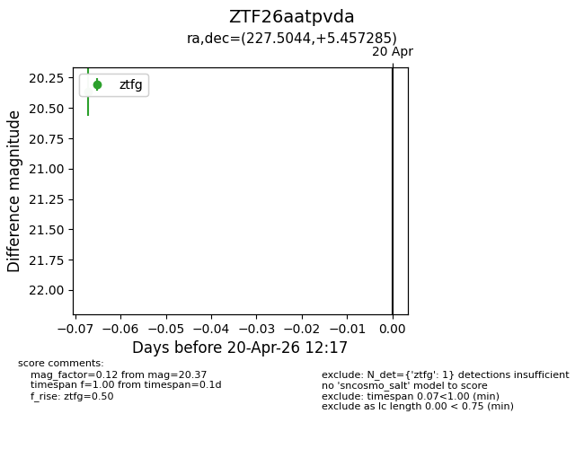
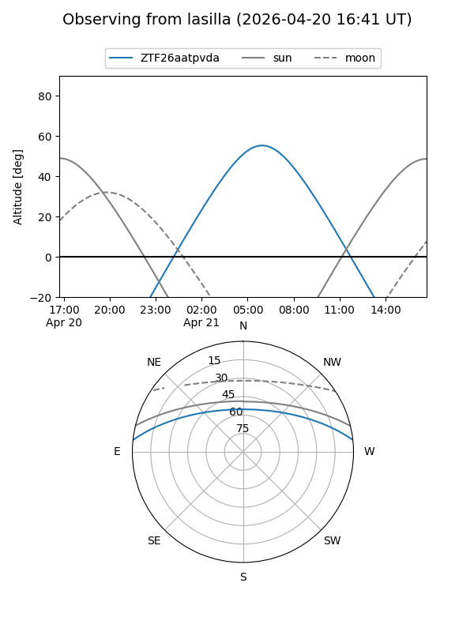
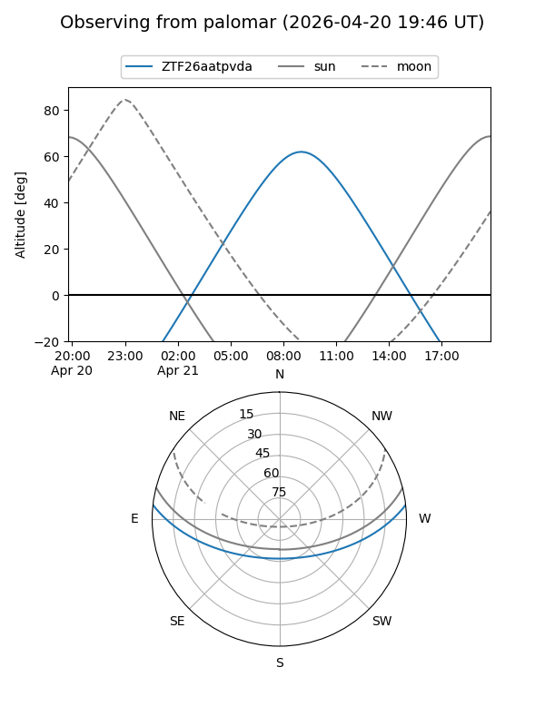

ZTF26aatpvda
Target ZTF26aatpvda at 2026-04-20 12:27
Aliases and brokers:
FINK: link
Lasair: link
ALeRCE: link
alt names
ZTF26aatpvda (ztf,fink_ztf)
Coordinates:
equatorial (ra, dec) = 227.5044,+5.45728
equatorial (HMS+DMS) = 15:10:01.06,+05:27:26.22
galactic (l, b) = (5.8961,+50.55473)
Flags:
Photometry:
last ztfg=20.37
1 ztfg detections
Lightcurve

Visibility


Additional plots